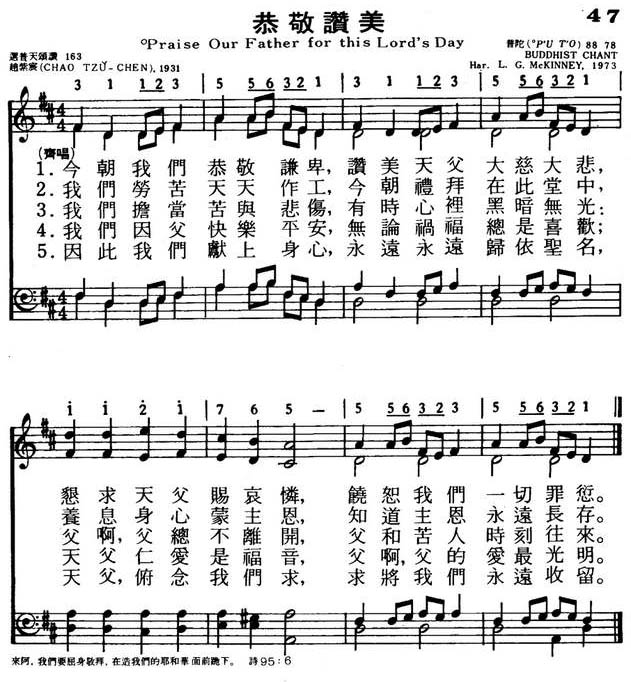

|
|
|
|
|
047恭敬赞美
1.今朝我们恭敬谦卑，赞美天父大慈大悲，
恳求天父赐哀怜，饶恕我们一切罪愆。 2.我们劳苦天天作工，今朝礼拜在此堂中， 养息身心蒙主恩，知道主恩永远长存。 3.我们担当苦与悲伤，有时心里黑暗无光： 父啊，父总不离开，父和苦人时刻往来。 4.我们因父快乐平安，无论祸福总是喜欢； 天父仁爱是福音，父啊，父的爱最光明。 5.因此我们献上身心，永远永远归依圣名， 天父，俯念我们求，求将我们永远收留。 |
|
https://www.mred365.cn/szxg/7050.html
 |
|
|
|
|

《恭敬讚美歌》「教導我們要謙卑讚美天父的大慈大悲」°他的詩不單常提到神的慈悲和耶穌的愛，更重要的《^他而言，神既是慈悲的，那麼m：人與人之間的關係’
就應當是一家人。


LX1799
Praise Our Father For
This Lord'S Day
047恭敬赞美
颂新
[華]
赵紫宸三字按罗马拼音作Chao Tsu — chen，所以在国外以T.C.Chao闻名。
1888年他出生于浙江省德清县新市镇的一个小商人家，1979年在北京逝世。1907年他受洗加入基督教监理会，在苏州东吴大学毕业后赴美留学，1916年在梵德比尔大学得硕士学位，19l7年得神学学士学位，返国后在东吴大学教授社会学，1925—
1951年间，他任燕京大学宗教学院院长兼燕大校牧，辅助燕大的宗教活动。在此期间，他曾到国内外教会访问、布道，参加各种会议。他曾三次参加中国基督教代表团出席
(1929年于耶路撒冷、1938年于
印度马都拉斯、1947年于加拿大惠特比)国际基督教宣教会议。1939一l940年应港粤教区何明华主教之请，携眷去昆明。在该地圣公会文林堂传道一年；
1941年7月在同一个礼拜程序中，由何明华先后三次按手，为他举行了坚振礼①，派立他为会吏，按立他为会长，使他由监理会转入中华圣公会；华北教区主教聘他在华北教区任会长
(牧师)。当年12月8 日，日本发动太平洋战争，赵紫宸被日本宪兵队逮捕。在狱中他想起这件事，更深切体会到“冥冥之中有一个永远的指导”，曾咏诗一首：
浮生几百苦无凭，仗势依人不可能， 绝路始逢峰壑转，泥沟安得水波澄?
后凋松柏才经火，先戒鸾皇好上滕， 漫道悬空劳信德，前修指点有师承②。
赵紫宸从日本宪兵队的牢房出来后，住在北京宣內沟沿基督教圣公会院内，有更多的时间从事写作，并向少数神学生讲授神学与保罗传。抗战胜利后，燕京大学复校，他也恢复了原来该校宗教学院院长的职务，兼任燕京大学的中国文学教授，曾讲授过中国哲学和陶渊明、杜甫诗篇的研究，重点讲诗中的宗教思想。
1947年美国普林士顿大学纪念建校二百周年，特授赵氏荣誉神学博士学位； 1948年世界基督教会协进会在荷兰阿姆斯特丹举行第一次大会时，他当选为六位主席之一。l951年美国发动侵朝战争，该协进会的中央委员会发表文件，支持侵朝战争，他毅然辞去该协进会的六个主席之一的职务，以示抗议。
赵紫宸无论在文学修养和宗教思想上都有较深远的影响。他对西方哲学，中国古典文学一特别是诗词戏剧以至书法艺术，都有很高的造诣。他晚年对西方基督教神学尤其是尼勃尔的神学进行了认真的分析和中肯的批评。他在基督教方面的著作有：《基督教哲学》(1925年)、《耶稣传》(1926年)、《民众圣歌集》(1932年)、《基督教进解》(1948年)等；他的英文论著散见于《教务杂 (Chinese Recorder)》、《中国基督教年鉴》、《国际宣教杂志 (Interntional Review of missions)》等书刊。
解放战争时期，赵紫宸反对国民党政府迫害进步学生；北京解放前夕，他从国外返回迎接解放；之后，他与陆志韦校长、张东荪教授等人，为北平的和平解放奔走商谈，作出了贡献。解放后，他被邀请参加了中国人民政治协商会议第一届会议；后来多年担任中国人民政治协商会议北京市委员会委员、常委。
赵紫宸一贯主张中国教会必须有自己的神学，中国教会要由中国信徒自己来主持。就是在日本宪兵队的监狱里，他也曾向日本“审判官”慷慨陈词说：“我所信的基督教虽从西方传来，由英美人讲授，也还因为我自己的需要，自己的解释，不必全赖西方的思想，老实说，西方人还等待着我东方的阐解，作新颖透辟的贡献。”出牢前又用书面表示他出狱后“要帮助教会，使教会自立、自养、自传、自理，成为中国本色的、不靠外人的教会”③这几句话是他一贯的主张。早在1924年时，他在牯岭中国基督教协进会上用英文向中外代表高声疾呼要建设中国的本色教会，他说：“教会在许多方面缺乏中国领袖，而需要最急切的却有两种人：一是本色的牧师 ，一是本色的著作家”。
《天恩歌》是赵紫宸根据耶穌在登山宝训上教导“勿虑衣食”(大6：25—31)那一段经文写成的，主要说明天父的大恩，贯穿在我们每天的生活之中。所用曲调乃中国民歌《锄头歌》— “手拿锄头锄野草哇，锄去野草好长苗呀……”。经范天祥教授 (事略参阅第31首)配以四部和声, 解放前30年代及40年代，这首民歌在华北一带甚为流行，曲调非常纯朴。歌词“除去野草好长苗”不只是农民的呼声，也是针对当时社会上的腐败而言。原词通俗易懂；赵紫宸所写的词也是如此。范天祥配的和声也与此纯朴的曲调相协调。《新编》从赵氏 1931年编辑的《民众圣歌集》里选了下列十一首圣诗，即：第30、31、43、59、101、130、138、148、184、202、204等首。
①坚振礼：在公教会和若干传统教派中为受过洗 (特别是婴孩洗)的信徒。请主教或牧师为他们举行的按手礼，以表坚信不渝。
②赵著《系狱记》53页。
③《系狱记》11页67页。
④赵著《本色教会的商榷》原载《青年进步》第67册，原文为英文，经刘乃慎译为中文，西德古爱华藏书。